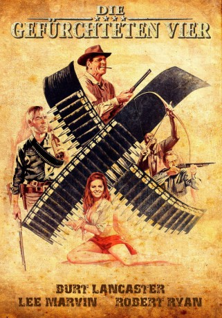
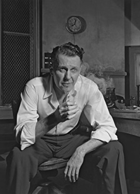
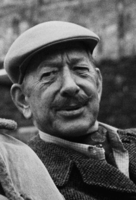

#1368 Die Gefürchteten Vier
Alternativ: The Professionals
Auszeichnungen: für 3 Oscars nominiert
 
 IMDB-Wertung: 7.4 / 10
IMDB-Wertung: 7.4 / 10  Metascore: 0
Metascore: 0 
Vier Abenteurer tun sich zusammen, als ihnen ein millionenschwerer Rancher ein Vermögen bietet, falls sie seine Frau zurückbringen, die mexikanische Banditen entführt haben. Der Weg nach Mexiko durch die Wüste ist weit, gefährlich und voller Überraschungen. Die größte Überraschung aber wartet auf sie, als sie ihr Ziel erreichen und feststellen: Die Frau ihres Auftraggebers will eigentlich gar nicht gerettet werden!
Jahr: 1966
Dauer: 117 Minuten
FSK: 16
Land: USA Studio: A Columbia Pictures ReleaseTonspuren: DD5.1 - ,
Untertitel: Deutsch,
Auflösung: 1080p (1920x816) Größe: 6778 MB
Genre: Action, Abenteuer, Western
Regisseur:  Richard Brooks
Richard Brooks
Drehbuch: Frank O'Rourke, Richard Brooks
Soundtrack: Maurice Jarre
Darsteller:
 Burt Lancaster als Dolworth
Burt Lancaster als Dolworth Lee Marvin als Fardan
Lee Marvin als Fardan Robert Ryan als Ehrengard
Robert Ryan als Ehrengard Woody Strode als Jake
Woody Strode als Jake Jack Palance als Raza
Jack Palance als Raza Claudia Cardinale als Maria
Claudia Cardinale als Maria-  Ralph Bellamy als Grant
-  Vaughn Taylor als Banker
- Joe De Santis als Ortega
- Rafael Bertrand als Fierro
- Jorge Martínez de Hoyos als Eduardo Padilla - Goatkeeper , as Jorge Martinez De Hoyos: in closing credits
- Marie Gomez als Chiquita
- José Chávez als Revolutionary
- Carlos Romero als Revolutionary
- David Cadiente als (uncredited
- Vincente Cadiente als (uncredited
- Elizabeth Campbell als Mexican Girl , uncredited
- Don Carlos als Bandit , uncredited
- Leigh Chapman als Lady , uncredited
- Roberto Contreras als Bandit , uncredited
- Dirk Evans als Man at Door , uncredited
- Foster Hood als (uncredited
- Darwin Lamb als Hooper - Grant's Associate , uncredited
 Eddie Little Sky als Jake's Prisoner , uncredited
Eddie Little Sky als Jake's Prisoner , uncredited- John Lopez als Mexican Servant , uncredited
- John McKee als Sheriff , uncredited
- Henry O'Brien als (uncredited
- Philip L. Parslow als Deputy Sheriff , uncredited
- Ron Veto als Mexican soldier , uncredited
Datei: X:\HD-Western-1960-1979\Gefürchteten Vier, Die (1966, FSK16, 1920x816).mkv seit 28.06.2015
Festplatte: HD Eastern+Western
 Es gibt insgesamt 110 Filme in der Gruppe 'HD-Western-1960-1979'
Es gibt insgesamt 110 Filme in der Gruppe 'HD-Western-1960-1979'